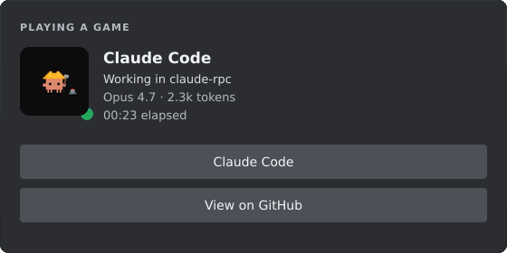
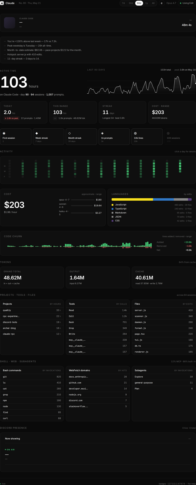
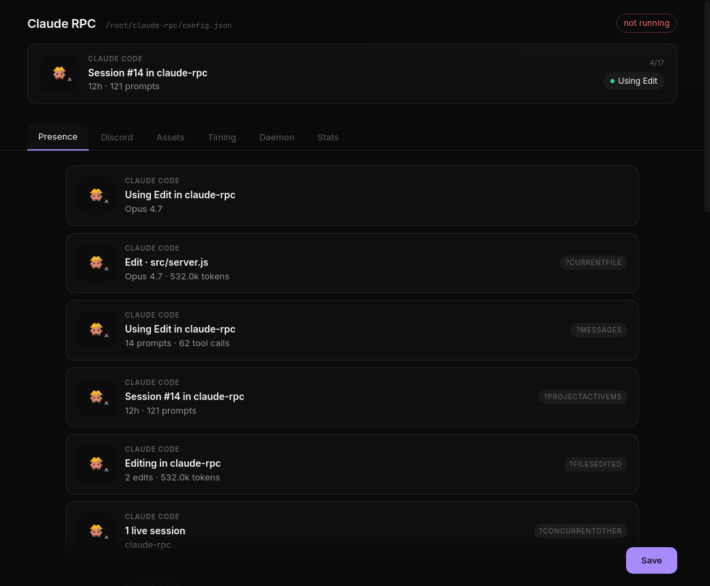

Live model, project, current tool, token count and lifetime stats — in your Discord profile. Driven entirely by Claude Code's hook system. Zero polling, zero overhead between sessions.

The CLI binary is built with Node SEA — no Node install required. The desktop app bundles the same CLI plus a config GUI with live presence preview and one-click daemon controls.
git clone & go
v0.3.6 introduced presence.byStatus — the card text follows
whatever Claude is doing right now. Lifetime stats cycle while you're idle.
Everything below is generated locally by walking your
~/.claude/projects transcripts. Incremental, cached, no network.
Hours, prompts, tokens, sessions, streaks, top files, top projects, lines added/removed, languages, bash usage, web domains, subagent runs.
Per-model spend (Opus / Sonnet / Haiku) using public list prices.
Editable in src/pricing.js.
claude-rpc status for a TUI with heatmap and hour
histogram. claude-rpc serve for a local web dashboard
with SSE live updates and a day-detail modal.
claude-rpc badge --metric hours --range 7d --out h.svg
— or pull a live one from
/api/badge.svg?metric=hours&range=7d when the daemon's
running.
Six-tab Electron app: Presence (drag-reorder, variable autocomplete, presets), Discord, Assets, Timing, Daemon (start/stop/restart, tail log), Stats.
claude-rpc insights generates 3–5 contextual lines:
weekly trend, peak weekday, hotspot file, cost pace, streak progress.

claude-rpc serve — range selector, heatmap, languages stack, leaderboards.
No database, no message bus, no background polling between sessions. Hooks fire on Claude lifecycle events, the daemon listens, Discord updates within a second.
SessionStart, UserPromptSubmit, PreToolUse, PostToolUse, Notification,
Stop, SessionEnd. Each one updates a shared state.json.
Long-running. Connects to Discord's local IPC. Watches the state file, builds the card, and pushes a frame.
Walks ~/.claude/projects/**/*.jsonl incrementally. Cached at
~/.claude-rpc/aggregate.json. Feeds the dashboards and the
rotation frames.
Download, run claude-rpc setup, paste your Discord application ID
into the config, and start the daemon. That's it.